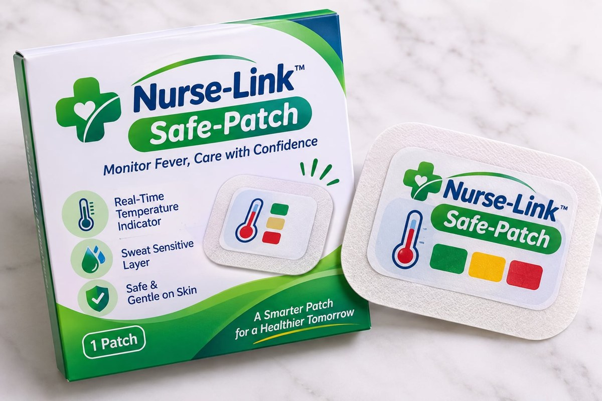

Apply TriaPatch
Place the gentle, skin-friendly patch on the skin following the product instructions.
Meet TriaPatch, a wearable temperature-monitoring patch that changes color with body temperature, making it easy for caregivers and healthcare providers to detect and monitor fever.
The thermo-reactive layer shows normal temperature, fever, or high fever.
Three simple steps, no extra tools needed.
Place the gentle, skin-friendly patch on the skin following the product instructions.
The thermo-reactive, sweat-sensitive layer changes color based on body temperature.
Keep monitoring over time, and seek medical assessment when fever or high fever is shown.
TriaPatch is a wearable temperature-monitoring patch with a thermo-reactive, sweat-sensitive layer. As the body temperature changes, the layer changes color to show normal temperature, fever, or high fever, so you can check at a glance without extra steps.
Made with gentle, skin-friendly material and designed for long-lasting monitoring, it gives caregivers and healthcare providers a simple, convenient way to keep track of a patient's temperature and support better patient care.
TriaPatch is an aid for monitoring and awareness. It does not replace a clinical thermometer, medical diagnosis, or professional medical advice. Follow the product's validated instructions and seek medical care when needed.

TriaPatch is a wearable temperature-monitoring patch with a thermo-reactive, sweat-sensitive layer that changes color based on body temperature to show normal, fever, or high fever.
Green means normal body temperature, with no fever shown by the indicator.
Yellow indicates fever. Monitor the person's temperature and condition closely.
Red indicates high fever. Seek prompt medical assessment or consult the Rural Health Unit (RHU).
No. TriaPatch is intended for fever monitoring and alert purposes. It does not treat or cure fever.
No. Use a clinical thermometer and follow healthcare professional advice for accurate temperature assessment.